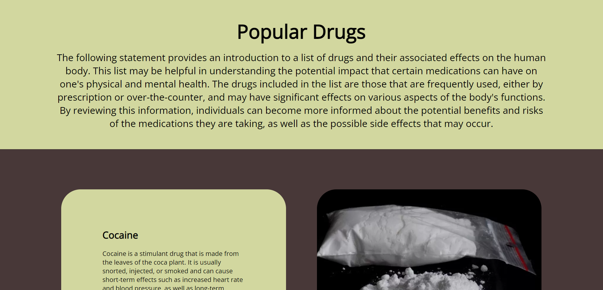
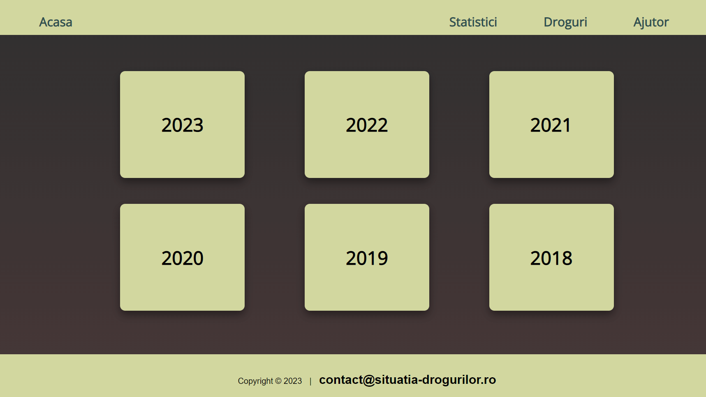
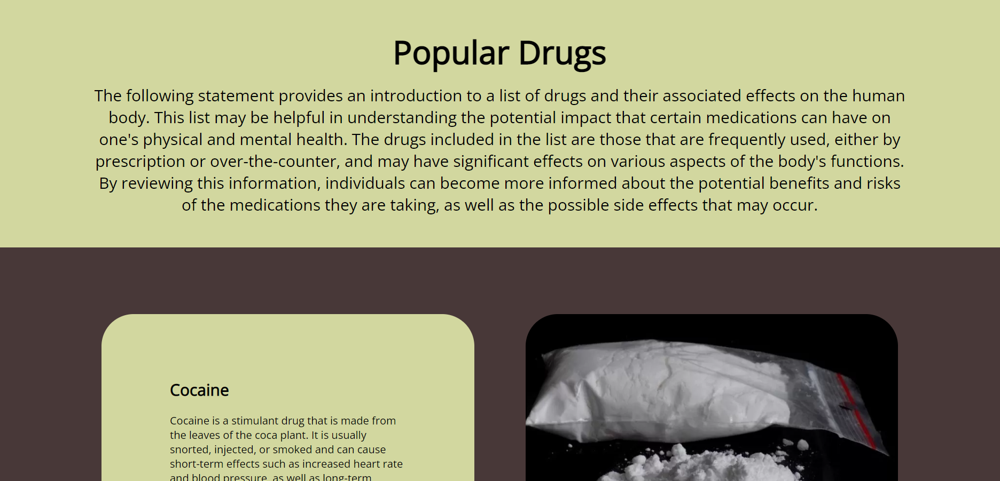
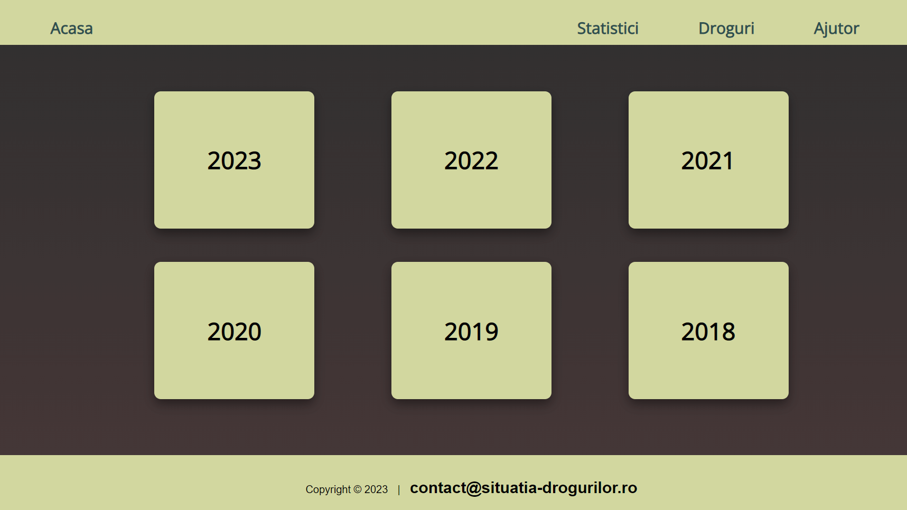

1. Introducere
Romanian Drug Explorer este o aplicație Web care permite vizualizarea unei statistici cu privire la consumul de droguri în ultimii 6 ani, în corelație cu infracțiunile și confiscările efectuate, plus urgențele medicale și campaniile de prevenire a consumului de stupediante. Aceste date vor fi analizate și vizualizate într-un mod accesibil și ușor de înțeles prin intermediul unor rapoarte și vizualizări grafice.
1.1 Scop
Romanian Drug Explorer a fost creat cu scopul de a oferi o platformă utilă pentru analiza și înțelegerea tendințelor privind consumul de droguri în România și pentru a ajuta la dezvoltarea de politici și programe de prevenire a consumului de droguri. Utilizatorii vor avea acces la o varietate de căutări și filtre pentru a explora datele în modul cel mai relevant pentru nevoile lor. Rezultatele căutărilor și rapoartele asociate vor fi disponibile ca documente HTML și în format CSV. De asemenea, aplicația va oferi un API REST/GraphQL propriu pentru a permite accesul la date și funcționalități. În plus, aplicația RoDX va permite utilizatorilor să exporte vizualizările generate în cel puțin trei moduri diferite (PNG, SVG și altele).
1.2 Convenții
Aplicația este gandită pentru a fi ușor de utilizat. Un alt aspect important pe care aplicația îl
urmareste
este rapiditatea cu care clientul reuseste să interacționeze cu aceasta.
Pe pagina principală a aplicației RoDX, utilizatorul poate găsi o serie de informații și functionalități
pentru
a analiza și vizualiza datele privind consumul de droguri în România în ultimii minim 6 ani.
Printre acestea se numără:
- Grafice și diagrame care prezintă evoluția consumului de droguri în România în ultimii ani, în funcție de diferite categorii.
- Date privind infracțiunile și confiscările efectuate, precum și informații despre urgențele medicale legate de consumul de droguri.
- Rapoarte și analize multi-criteriale, care permit utilizatorului să exploreze datele și să descopere corelații și tendințe mai profunde.
- Posibilitatea de a descărca datele și vizualizările în formate diferite (PNG, SVG, etc.), pentru a le utiliza ulterior.
- Un API REST/GraphQL propriu, care permite accesul la datele și funcționalitățile aplicației pentru alte aplicații și servicii.
- Funcționalități de căutare și filtrare a datelor, care permit utilizatorilor să exploreze și să descopere datele specifice care îi interesează.
- Secțiuni informative și educative, care oferă utilizatorilor informații despre riscurile și efectele consumului de droguri, precum și sfaturi și resurse pentru prevenirea acestuia.
1.3 Referinţe
Toate datele statistice vor fi colectate din surse oficiale și de încredere, cum ar fi site-uri
guvernamentale,
rapoarte de cercetare și publicații științifice.
Sursa poate fi consultata in link-ul de mai jos.
2. Descriere generală
2.1 Perspectiva produsului
Proiectul consta in realizarea unui instrument web de analiza si vizualizare a situatiei consumului de droguri in Romania, in ultimii A ani (minim 3). Utilizand datele statistice privind infractiunile si confiscarile efectuate, urgentele medicale si campaniile de prevenire a consumului de stupefiante, acest instrument va ajuta la intelegerea si evaluarea situatiei din perspectiva utilizatorilor finali. Prin intermediul său, utilizatorii pot căuta și filtra datele în funcție de diverse criterii, precum regiunea, tipul drogului, anul și altele. De asemenea, sistemul poate genera rapoarte personalizate și vizualizări ale datelor sub formă de grafice și diagrame, care pot fi descărcate în formatele PNG și SVG.
2.2 Funcționalitățile produsului
Sistemul va oferi următoarele funcționalități:
- Vizualizarea datelor statistice privitoare la consumul de droguri în România, în ultimii cel puțin trei ani, în relație cu infracțiunile și confiscările efectuate, urgentele medicale și campaniile de prevenire a consumului de substanțe stupefiante
- Căutări multi-criteriale în baza de date
- Generarea de rapoarte personalizate, sub forma de documente HTML sau fișiere CSV
- API REST/GraphQL propriu, pentru a permite accesul facil la datele colectate și stocate
- Vizualizări grafice generate în cel puțin trei moduri diferite, exportabile în formatele PNG și SVG
2.3 Categorii de utilizatori
Instrumentul web dezvoltat poate fi utilizat de o varietate de utilizatori, inclusiv:
- Cercetători
- Jurnaliști
- Personal medical
- Ofițeri de poliție
- Organizații neguvernamentale
- Alți specialiști în domeniul sănătății publice sau al luptei împotriva drogurilor
2.4 Mediu de operare
Sistemul poate fi accesat prin intermediul unui browser web, fiind compatibil cu cele mai populare browsere web, precum și cu sistemele * de operare Windows, Mac OS și Linux.
2.5 Design și constrângeri de implementare
Pentru a asigura o experienta placuta si intuitiva utilizatorilor, produsul va avea un design modern si atractiv. Interfata utilizatorului va fi creata utilizand tehnologii Web de ultima generatie, astfel incat sa fie responsiva si sa se adapteze automat la dimensiunea ecranului pe care este accesata.
In plus, sunt cateva constrangeri tehnice importante de care trebuie tinut cont in timpul implementarii produsului:
- Performanta: Produsul trebuie sa aiba o performanta buna si sa poata gestiona un volum mare de date statistice si cautari simultane fara a afecta viteza de incarcare sau de raspuns.
- Usabilitatea: Produsul trebuie sa fie usor de utilizat si sa ofere o experienta placuta utilizatorilor, indiferent de nivelul lor de cunostinte tehnice. Interfata trebuie sa fie simpla si intuitiva, iar informatiile trebuie sa fie prezentate intr-un mod clar si accesibil.
- Scalabilitatea: Produsul trebuie sa fie scalabil si sa poata fi extins cu usurinta pentru a adauga noi functionalitati sau pentru a gestiona un volum mai mare de date in viitor.
2.6 Termeni de utilizare a aplicatiei
Produsul va fi in conformitate cu toate reglementarile si standardele legale aplicabile. Utilizatorii vor fi informati cu privire la politica de confidentialitate si termenii si conditiile de utilizare a produsului. De asemenea, vor fi implementate masuri de securitate pentru a proteja datele utilizatorilor si pentru a preveni accesul neautorizat.
3. Cerinte externe
3.1 Interfata utilizator
Pagina principala:

Sectiunea 'Termeni și condiții':

Pagina cu statistica pe anul curent:

Pagina de suport:

Pagina cu informatii despre droguri:

Pagina de navigare pentru statistici:

Pagina cu statistica pe anul curent:
Pagina de suport:
Pagina cu informatii despre droguri:
Pagina de navigare pentru statistici:
4. Cerințe funcționale
- Sistemul permite utilizatorilor să selecteze perioada de timp pentru care doresc să vizualizeze datele statistice cu privire la consumul de droguri, infracțiunile și confiscările efectuate, urgențele medicale și campaniile de prevenire a consumului de stupediante.
- Sistemul permite utilizatorilor să vizualizeze datele sub formă de grafice, diagrame sau hărți, astfel încât să poată obține o înțelegere mai bună a tendințelor și a relațiilor dintre diferitele seturi de date.
- Utilizatorii pot descărca datele sub formă de documente HTML și CSV pentru a putea analiza datele în afara sistemului.
- Sistemul trebuie să aibă un API REST/GraphQL propriu pentru a permite dezvoltatorilor terți să acceseze datele și să le integreze în alte aplicații.
- Utilizatorii trebuie să poată exporta vizualizările generate sub formatele PNG și SVG pentru a le utiliza în alte documente și prezentări.
5. Cerinte nonfuncționale
- Performanță: Site-ul trebuie să fie capabil să gestioneze o cantitate mare de date și să ofere o experiență rapidă de utilizare, fără întârzieri semnificative în încărcarea paginilor și rapoartelor.
- Securitate: Datele introduse în sistem trebuie să fie protejate prin securitatea sistemului și să fie accesibile doar utilizatorilor autorizați.
- Scalabilitate: Sistemul trebuie să fie capabil să gestioneze creșterea volumului de date și a numărului de utilizatori fără a compromite performanța.
- Disponibilitate: Site-ul trebuie să fie disponibil și să ofere acces la date și funcționalități în orice moment, cu un timp de inactivitate minim.
- Usabilitate: Interfața site-ului trebuie să fie intuitivă și ușor de utilizat pentru a permite utilizatorilor să acceseze rapid datele și funcționalitățile dorite.
- Compatibilitate: Site-ul trebuie să fie compatibil cu o gamă largă de dispozitive și platforme, inclusiv cu browserele cele mai utilizate.
- Documentare: Documentația sistemului trebuie să fie clară și ușor de înțeles, oferind utilizatorilor instrucțiuni detaliate pentru a utiliza funcționalitățile și a accesa datele.
- Testabilitate: Sistemul trebuie să fie ușor de testat, iar testele trebuie să poată fi efectuate în mod automat pentru a verifica funcționalitățile și a asigura că sistemul rămâne într-o stare bună de funcționare.
- Extensibilitate: Sistemul trebuie să fie ușor de extins pentru a permite adăugarea de noi funcționalități și a îmbunătăți experiența utilizatorilor.
- Performanță API: API-ul trebuie să ofere performanță ridicată și să fie scalabil pentru a permite accesul la datele și funcționalitățile sistemului de la diferite aplicații și servicii.